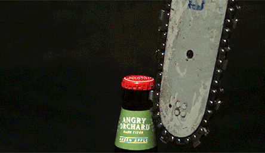

“Maybe we’re storing bigger, analyzable chunks”
And we’ve now talked about frequency having important effects
Today, let’s talk about some other strange chunks
Clitics
Compounds
Closing the Lexical Discussion
There’s no clear definition that works well for everything
Some multi-word chunks feel ‘cohesive’
Some affixes feel ‘wordy’
Affixes that show word-like independence
girl
the girl’s book
the little girl’s book
the little girl from Canada’s book
This affix can attach to a variety of words with the same meaning!
John’s doing great in the class.
Fixing the scooter you broke’s gonna be expensive
That car in red’s super hard to find.
This has the same distribution as ‘is’, but acts like an affix.
I would’ve youghten him out of there had I known
All the ones I’ve seen’ve been blue.
The purple’ve sold out already.
You already’ve seen it?
They don’t have selectional restrictions, and can attach to most things
They have freedom of host, and can attach to many lexical categories
They appear to attach after stress has been assigned
… and your book goes into more detail about how in Chapter 9
But they’re an example of something that doesn’t quite ‘fit’ in a world of affixes and stems
If we conceptualize morphology as only having two states, ‘attached affix’ and ‘stem’, we’re gonna have a rough time.
… and force us to consider a morphology which allows gradient attachment
What about the opposite?
Let’s think about independent chunks, that feel attached!
‘Backpack’ is not ‘back’ and ‘pack’
‘Laptop’ is not ‘lap’ and ‘top’
Compounds are single complex lexemes composed of two or more lexemes
Compounds can be two or more words. ‘Blue cheese salad dressing’
Don’t get too hung up on spaces, dashes, and lacks thereof!
Chinese: zhèn zhi̊ (press-down + paper) = paperweight
Swedish: piphuvud (pipe + head) = pipe bowl
Czech: lido-jed (human + eat) = cannibal
Koasati: ʧonhǎtka (oʧona ‘metal’ + hatka- ‘white’) = bucket
Tłı̨chǫ Yatıì (Dogrib): dlòotsǫ̀ǫ̀ (dlòo ‘squirrel’ + tsǫ̀ǫ̀ ‘dung’) = ‘peanut butter’
‘wrist watch’ was an innovation, until it wasn’t
‘Lap top computer’ wasn’t always a ‘laptop’
‘data set’ isn’t a compound to most people, but it is to us!
‘nail bed’ is a thing to people who do fingernails professionally
They have idiosyncratic or restricted meanings
They have phonological and prosodic cohesion
They act like stems
Not all packs on the back are backpacks
rainfall, snowfall, *hailfall, *sleetfall
You can dog walk somebody who isn’t a dog
A tower computer placed on the lap is not a laptop computer
They can feel idiomatic
Butt Dial
Booty call
Break a leg
Big Mac
She gave me a Krispy Kreme Donut
I had Five Guys for dinner last night
Compounds can have specific tone patterns
Phonological rules can apply differently within compounds
Affixes may not apply within them
What’s the plural of…
Endocentric: referent a ‘kind’ of one of its members
Exocentric: referent is ‘outside’ of the members’ meanings
Coordinative: referent is a combination of the members’ meanings
Appositional: both members have the same referent
The head determines the lexical category
The head carries the inflection for the compound
The other element modifies or specifies the meaning of the head, it’s the ‘dependent’
Endocentric compounds refer to a subtype of the head.
If there’s no head, the compound is exocentric!
English places the head on the right: Light years
Spanish places the head on the left: año luz (‘light year’) -> ‘años luz’ (‘light years’)
So does Tagalog: matang-lawin, eyes-hawk, ‘hawkeyes’
I saw a French Literature Professor
He’s got a Justin Bieber Face Tattoo
Borderline Personality Disorder Tests
With specific meanings, phonological wordiness, and word-like inflection
Unlike clitics, which are affixes that act wordy on occasion!
… which brings us back to that lexicon bit
Morpheme-based Lexicon: Storage is expensive, so let’s store the smallest parts and use rules to combine them
Word-based Lexicon: Storage is cheap, store EVERYTHING and then use analogy to fill in the blanks
Uniting forms with rules can be very elegant
The lexicon is compact and efficient. Little storage space is required
Rules can efficiently generate a lot of the variants we see
Our analysis (forms+rules) generates legal forms, which leaves us ready for productivity!
Phonemes and Morphemes sure feel real!
The elegance and efficiency is reduced as irregularity increases
Non-compositional meanings aren’t efficient
Non-concatenative morphology is hard
Frequency effects are harder to account for
Storage appears to be pretty cheap
Emergence is pretty compelling for explaining learning and language change
Reanalysis works great
Phonetic phenomena work great in a usage-based world
Phonology goes away!
Frequency effects come free with the model!
Your students glare at you when you explain it
Morphemes sure feel real in phonological and morphological rules
Polysynthetic languages result in a combinatorial explosion
‘Analogy’ is magic, and ends up looking like generative rules when formalized
It takes forever to accomplish anything
We’re storing lots of words, including some frequent ‘complex’ chunks
We also have the ability to decompose words according to rules
We choose the method of access that makes most sense at the time!
Best of both worlds
Frequency effects and whole-word-like phenomena are explained
Analogy is done better than ‘Magic!’
We lose the simplicity of both sides
Hello again, Phonemes and Phonology
Now we have two systems awkwardly taped together
None of them make predictions that are provably false
They seem cognitively possible
They account for relevant amounts of data
They’ve all stood up to scrutiny in the community
We don’t know which of these approaches is ‘more real’
“How do I best explain what’s going on in this chunk of language?”
Theories are tools which help us
Every theoretical tool has strengths and weaknesses
Some problems are stupid easy with one theory, and ridiculously hard for another
You can make morpheme-based approaches deal with high-frequency phonological reduction
You can make usage-based approaches deal with wugs and morpheme-driven processes
You can make a dual-route approach account for all the data, and specify the switching pattern

Look at the problem you have in the data
Choose the approach that’s best suited to address it
… and get the analysis done
… but for now, I’m just going to use what works
</ >
No Class on Monday!
Wednesday, we’ll look at some amazing data!
Thank you!